AI Healthcare Operations · 2026
HealOS
Five disconnected tools consolidated into one AI-powered command center for medical practices. I led the end-to-end design: AI agents answer the phones, write clinical notes, verify benefits, and chase claims, while humans stay in control.
Role, Lead Product Designer
Team, Attack Capital
Scope, 7 modules, 40+ screens
Tools, Figma · Lovable · Claude
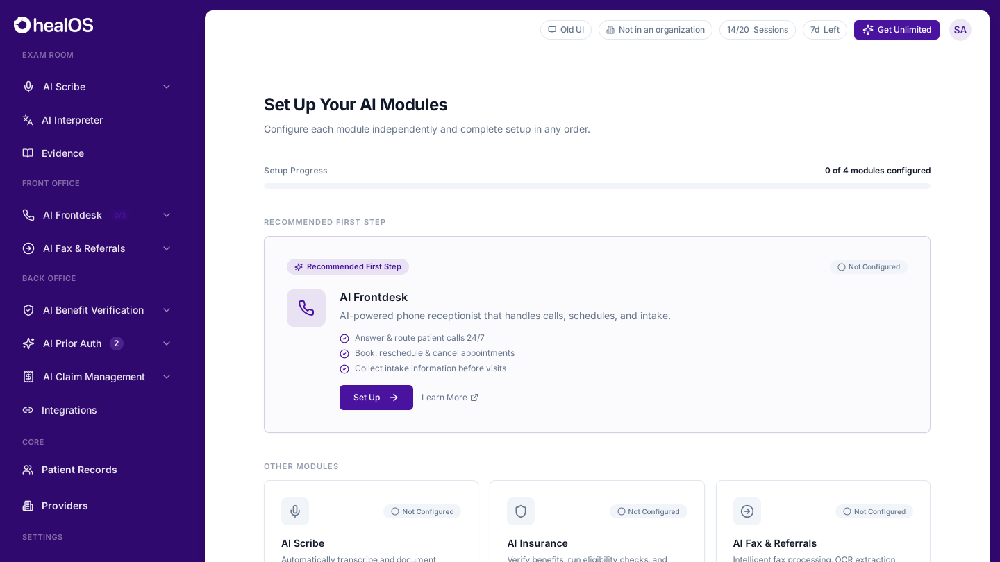
HealOS home, the front door to every module
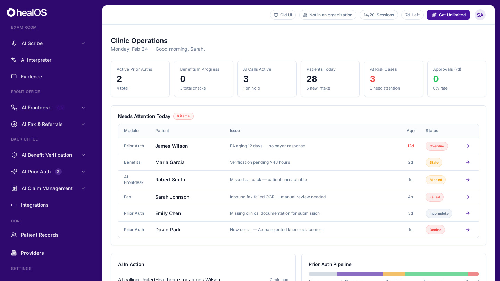
Practice command center, /dashboard
01 / The problem
A medical practice runs on five back offices that don't talk to each other.
Front desk, clinical documentation, benefits verification, prior auth, and claims each live in separate tools staffed by overloaded people. HealOS replaces that patchwork with AI agents per function, the design challenge was making seven modules feel like one product, keeping clinicians in command of automation they can trust. A "Needs Attention Today" queue surfaces exactly what the AI couldn't resolve alone.
02 / AI Frontdesk
A receptionist that never puts patients on hold.
Calls, inbox, appointments, and providers under one agent. Setup is a guided wizard, practices define identity and behavior, then test with a live call. Web chat agents extend the same intake to the practice site.
▶ Live walkthrough, dashboard, calls, and inbox in motion
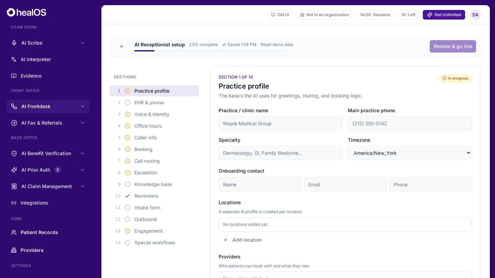
Guided setup wizard
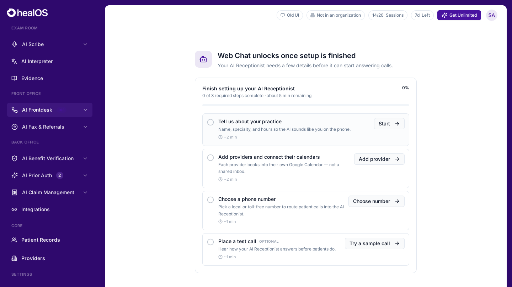
Web chat agents, same intake, new channel
03 / AI Scribe
Clinical notes that write themselves during the visit.
The records workspace turns conversation into structured documentation. Templates and dot phrases encode each clinician's style, the AI drafts, the clinician approves. 22 notes a day at a 99% completion rate.
▶ Live walkthrough, recording to signed note
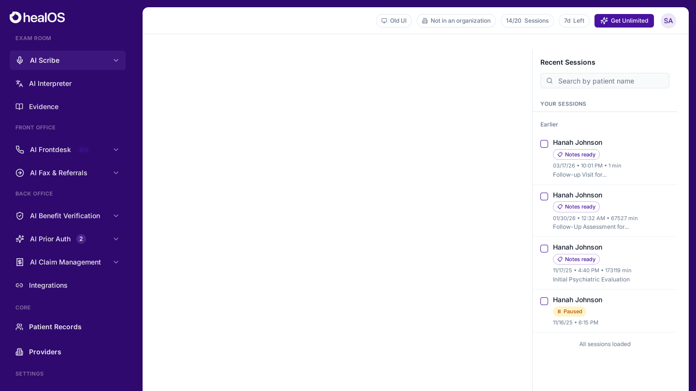
Records workspace
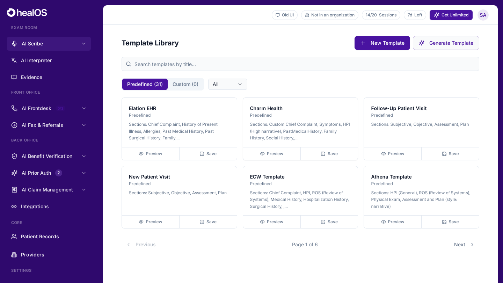
Templates, every clinician's voice, encoded
04 / Revenue cycle
Claims, eligibility, and prior auth, the deepest 10 screens in the product.
Money is where practices bleed. A claims overview tracks the pipeline, a kanban makes denial-chasing a workflow instead of a spreadsheet, and AI handles eligibility checks and payer phone calls. Approval rate, resolution time, and at-risk cases stay on screen at all times.
▶ Live walkthrough, claims tracking kanban
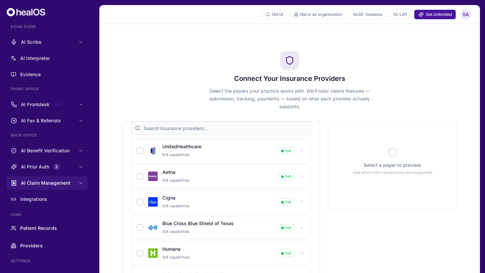
Claims overview
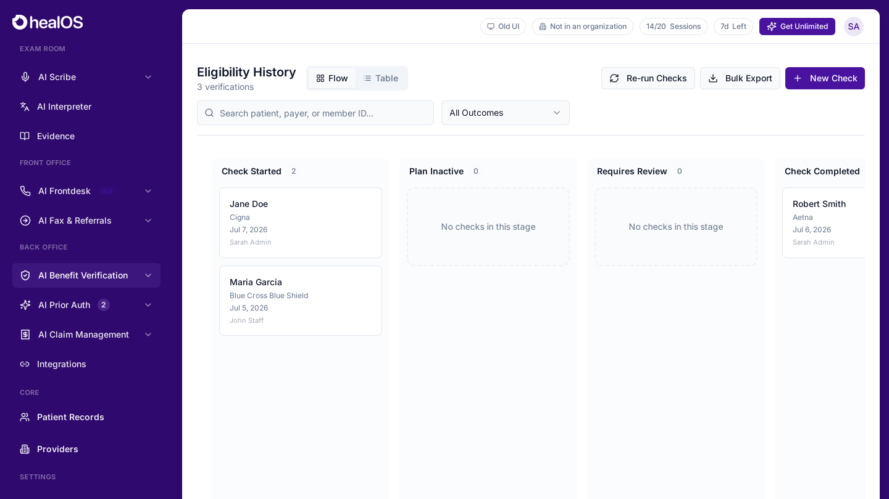
Eligibility verification
05 / One system, not seven tools
Fax, patients, and call workflows share the same bones.
40+ screens hold together because every module reuses one grammar: left rail grouped by function, KPI strip, work queue, detail panel. Learn one module and you've learned them all, that's the design system doing the work.
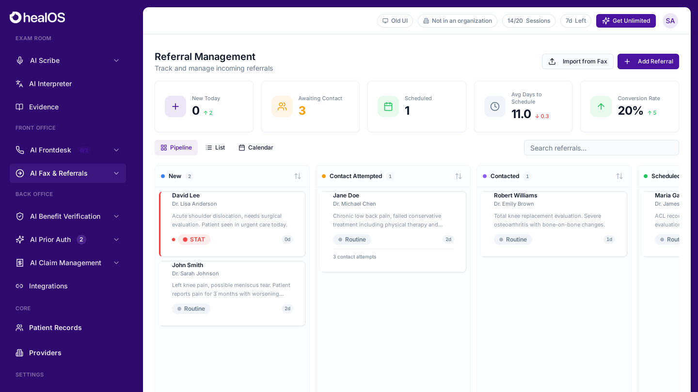
Fax & referrals
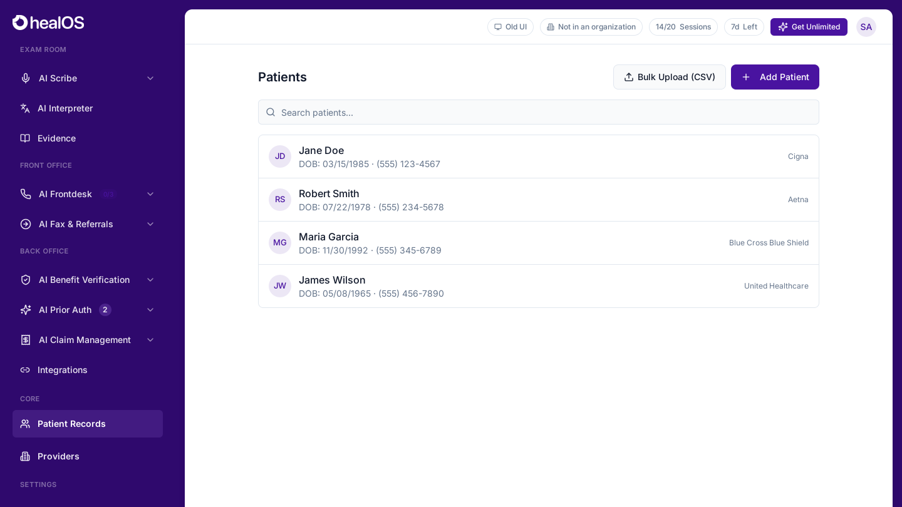
Patient records
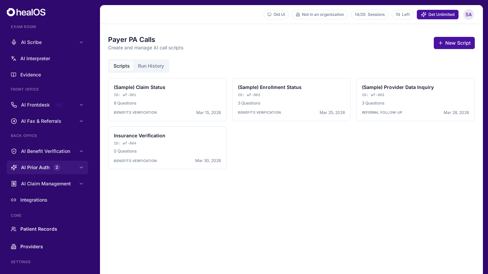
AI call workflows
06 / Details
The close-ups where trust is earned.
Status language, AI activity feeds, and pipeline visualizations, the component-level decisions that make automation legible to people whose license is on the line.
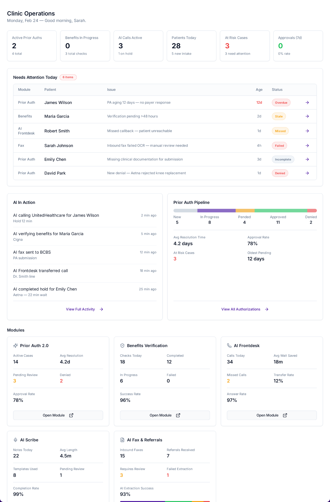
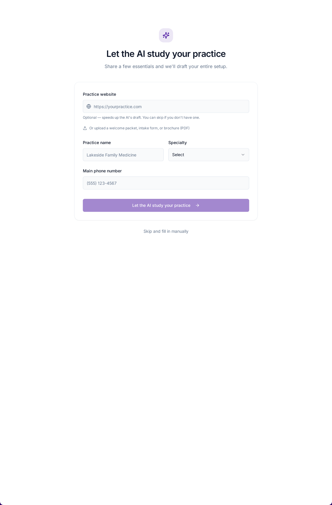